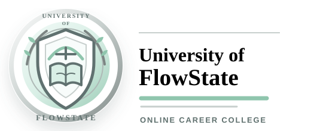

University of FlowState is a planning, study, career exploration, and job-training tool. It does not guarantee
employment, income, promotions, admissions, certifications, licensing, scholarships, interviews, grades, or
any specific personal, academic, legal, financial, medical, or career outcome.
Content is educational and informational only. It is not legal, financial, medical, mental health, immigration,
tax, or professional licensing advice. You are responsible for checking requirements, laws, employer standards,
and school or licensing rules that apply to your situation.
By continuing, you understand that your choices, effort, market conditions, eligibility, and outside decisions
affect results, and that University of FlowState is not legally responsible for decisions made from this preview or portal
to the fullest extent permitted by law.
FlowState ecosystem
Connect to FlowState
FlowState will receive your student identity, current program selections, and one suggested study block.
Your University of FlowState password is never shared.
Student
Student
Email
student@email.com
Program
Career Exploration
Study block
Career exploration study block
FlowState will open securely in a new tab and ask you to confirm before adding the study plan to your signed-in account or guest profile.

University of FlowStateKnowledge is power.
Institute for career discovery, practical excellence, language, and creative study
FlowState ecosystemFlowState is your life operating system. University of FlowState is the campus where your goals become skills, credentials, and a career portfolio.
Admissions preview
Begin with purpose. Study with distinction.
Build a focused path through career study, job training, language, or electives. Your portal opens only with the choices you make.
Open a guided inquiry and work through patterns in what energizes you, what you value, and what you want to learn.
Career or job trainingChoose or skip
Pick a career path, start with basic job excellence, or skip until you know more.
Custom portalSaved by student
Each email gets its own assignments, advisor notes, flashcards, and selected training focus.
Meet Raini Smith
Start a guidance inquiry
You can answer before signing in. The preview will reflect patterns, then you can sign in
to continue inside your custom portal.
Raini Smith | Student Guidance
Your first reflection will appear here.
Office of the DeanKnowledge is power.
About University of FlowState
A university built around the whole student
University of FlowState is an independent online learning experience for career discovery,
practical job excellence, languages, creative study, personal development, and portfolio-based learning.
Students may build a career program, combine several electives, or begin with independent elective study.
Study choices
170+ career pathways, 240+ practical job plans, 30+ languages, and 200+ creative, practical, and academic electives
Learning model
Career-specific lessons, English-captioned media, projects, practice, reflection, and visible evidence
Student guidance
Guided career inquiry with Raini Smith and a learning profile that adjusts study and retention methods
Education should help you recognize your gifts, practice them with discipline, and build a life that feels
like your own. Our work begins with the student, then shapes the program around what they are ready to become.
University of FlowStateKnowledge is power.
Choose your entrance
How would you like to begin?
Choose how you want to begin your University of FlowState experience.
Begin with a career, a language, one or more electives, or Raini Smith's guided passion-discovery process.
Each is a complete standalone option, and you may combine or change them whenever your goals evolve.
Your saved direction
Career exploration
No academic path has been selected yet.
Career
Not selected
Language
Not selected
Electives
Not selected
Choose your entrance
Start with a career path or discover one with Raini
Begin with any one program, then use More inside your portal to add or change language, electives, job training, or learning support.
Step 1 of 5
Build your program
Choose a career path
Choose one career when it feels right. Your language, electives, and job training remain separate choices.
Build your program
Add job training
Choose practical training for any job, or continue without it.
Build your program
Choose a language program
Language study can support your chosen career or be completely independent.
Build your program
Choose electives
Select as many studios as you want. Each selection becomes its own course and project.
Learning experience
How should your courses adapt?
Choose a learning-style assessment for a tailored starting point, or let the university use visual, audio, reading, and hands-on learning together and adapt as you progress.
University of FlowStateOffice of Online Learning | Active enrollment
Online CampusSpring 2026Good Standing
Student portal/Dashboard
Dashboard
Your academic status, current path, and fastest next steps.
Undergraduate certificate portal
Career Exploration Portal
A structured online program with weekly modules, graded labs, transcript progress,
portfolio requirements, advising checkpoints, and career preparation at University of FlowState.
Raini Smith | Student GuidanceLab 01 submission pending
UAcademic services
Student Guidance Advisor Raini Smith | Career, learning, language, elective, and pathway inquiries
GDA 101Choose your path
Guidance intake
PathPath statusExploring
Choose a career when ready
Academic termTerm 1
Career foundations
Current grade0
No grade yet
Credits earned3
24 certificate credits required
Student servicesOpen
Resume, GitHub, interviews
My courses
Current enrollment
Spring cohort
Gradebook
Career readiness score
Calculated score
0/100
Assignments4 / 6 complete
Labs1 / 3 submitted
PortfolioProject 01 drafting
Career studioStarts Term 5
Assignments
This week
Classroom
Lecture notes
Metric to meaning
Multimedia learning studio
Video, audio, photography, diagrams, and presentations
Playable lessons
Multimedia lesson playerChoose a multimedia lesson
Open a lesson to play video or narration, inspect full photographs, use an interactive diagram, or run a timed presentation. Written context remains available with every format.
Syllabus
Career-ready curriculum
6-term certificate
Transcript
Graduation requirements
Student record
Portfolio credits3 projects
Career proof, applied elective, capstone
Technical labs40+ hours
Career tools, scenarios, standards, feedback
Career studioReady kit
Resume, GitHub, LinkedIn, interview stories
CapstoneFinal demo
Explain one project like a real analyst
Academic calendar
6-month school path
Graduation plan
Lab 01
Career Practice Dataset
Starter dataset
Player
Country
Platform
Sessions
Level
Revenue
Last login
Churn
Writing center
Portfolio language
Copy-ready
Career insight
Your selected path will generate a career-specific explanation here, including the
skill you practiced, what improved, and why the work matters.
Next recommendation
Use this space to turn your project into a clear next step for employers, clients,
apprenticeships, training programs, or your own portfolio.
Language program
Language studio
Standalone or combined
General language masteryEveryday fluency
Build listening, speaking, comprehension, culture, and practical conversation for life beyond work.
Apply the same language to vocabulary, people, situations, and communication from your chosen path.
VocabularyData
Click to reveal meaning
Career advising center
Build and update your study plan
Passion audit
Recommended pathwayStill exploring
Start with the advisor conversation, then choose a career, language, and elective when
the pattern becomes clearer.
Career focus
Career fit, skills, work setting, and purpose
Portfolio project
One project matched to the career you choose
Elective proof
Language or elective proof attached only if selected
Student guidance inquiry
Raini Smith, Student Guidance Advisor
InquiryGUIDANCE-001
StatusIntake open
Next stepDescribe what brought you here
1. Intake2. Reflection3. Options4. Action plan
Raini Smith
Welcome to Student Guidance. What would you like help understanding about your career direction, language interests, electives, or next path?
Emerging passion profileNot enough answers yet
Answer a few questions and Raini will look for career, language, and elective possibilities that fit your interests and goals.
Learning profile assessment
How do you learn and retain information?
Course personalization
Learning profileNot assessed yet
Complete the quick assessment so University of FlowState can adapt courses, practice, and retention advice to how you learn.
Workforce training center
Be excellent at any job
No degree required
Show up earlyLearn the systemMake customers feel safeAsk for feedbackTrack your wins
Training planSales Associate
Learn the product, greet every customer clearly, ask useful questions, and close with confidence.
Institution and leadership
About University of FlowState
University of FlowState is an independent online learning environment designed around the whole student.
It brings career direction, practical job preparation, language learning, creative practice, life skills,
multimedia instruction, and portfolio development into one personalized portal.
University mottoKnowledge is power.
FormatOnline and self-paced
Students can build a weekly rhythm around their capacity while keeping a structured six-month pathway.
ProgramsCareer, job, language, and elective study
A career is optional. Students may also choose job training, a language, several electives, or an elective-only plan.
TeachingMultimedia and project-based
Lessons combine English-captioned career videos, audio, photographs, diagrams, written context, practice, and projects.
EvidencePortfolio-centered completion
Progress comes from completed lessons and tasks, with projects, reflections, training records, and career-ready proof.
Our missionTurn curiosity into a realistic path and visible skill
The university helps students understand what holds their attention, compare possible futures, choose without
being forced into a path, practice useful skills, and create evidence they can explain to an employer, client,
school, collaborator, or community.
What students can studyA broad catalog without unrelated course overlap
The catalog covers more than 170 career pathways, more than 240 practical job-training roles, more than
30 languages, and more than 200 electives. Subjects range from painting, photography, voice acting, and drama
to science, technology, business, wellness, home economics, woodshop, civic life, and practical making.
How personalization worksYour active choices control the portal
Selecting or switching a career rebuilds the course titles, lesson plan, six-month timeline, projects,
readiness requirements, and career media around that path. Languages remain broad while adding a professional
strand, and each selected elective keeps its own course and completion record.
How learning adaptsStudy and retention methods follow the learner
A learning assessment identifies visual, auditory, reading and writing, hands-on, or balanced preferences.
Courses then emphasize fitting media, explanations, practice, retrieval, repetition, and review intervals
without limiting students to a single learning method.
University leadershipAcademic vision and student guidance
Leadership is divided between the university's academic mission and the student's individual decision process.
The dean defines the educational model; Student Guidance helps each learner use it thoughtfully.
Founding DeanAries Greyson
Dean Greyson oversees the whole-student academic vision, applied learning standards, program structure,
portfolio expectations, and the connection between FlowState planning and University of FlowState study.
Student Guidance AdvisorRaini Smith
Raini leads guided inquiries for career discovery, path changes, work preferences, learning support,
language and elective planning, job training, and course-progress questions.
Education should help you recognize your gifts, practice them with discipline, and build a life that feels
like your own. Our work begins with the student, then shapes the program around what they are ready to become.
Student standardHonest progress
Completion begins at zero and increases only when the student marks real course work complete.
Career standardRelevant preparation
Plans, projects, multimedia, and readiness measures follow the selected path and update when that path changes.
Learning standardAccessible context
Multimedia is paired with readable instructions, practice steps, source credit, and English captions where provided.